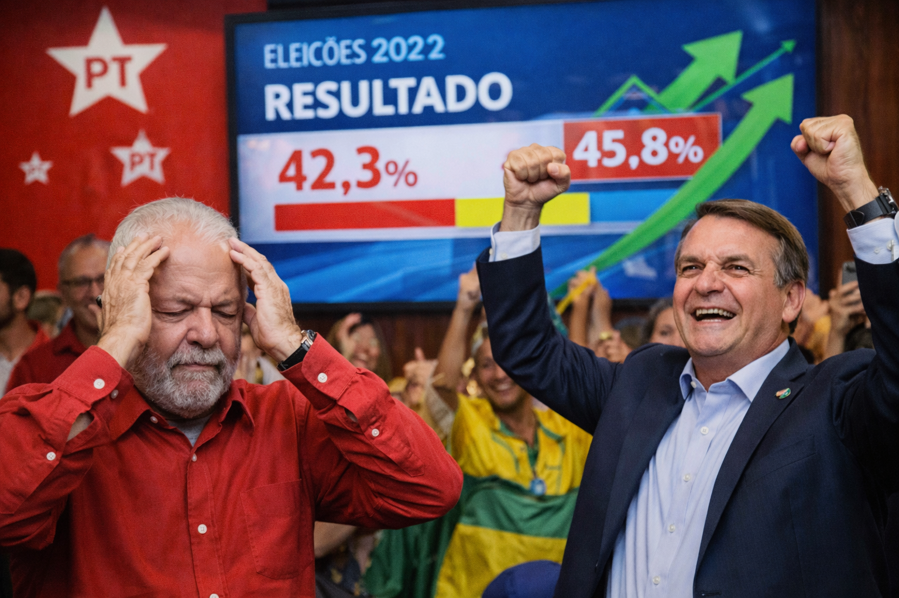

Bastidores
Funcionário do setor de Patrimônios Públicos é visto com Lula e Bolsonaro
Gilberto Junior da Prefeitura de Boa Esperança é visto...
Um olhar atento para o que está perto.
Gestão pública, investimentos e os movimentos que ajudam a entender o cenário político.
Gilberto Junior da Prefeitura de Boa Esperança é visto...

Programa prevê obras em infraestrutura e educação.

Levantamento mostra crescimento de candidatos independentes.
Continue explorando os assuntos da nossa região.
Explorar a região